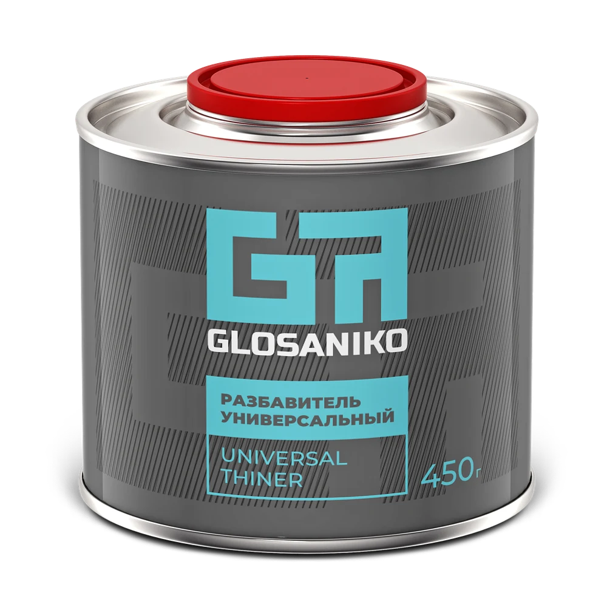

Эмаль
Формирует цвет и финишное покрытие.
Двухкомпонентные акриловые эмали
для авторемонта
АКРИЛОВАЯ ЭМАЛЬ / GLOSANIKOЦвет и блеск готового покрытия — без нанесения лака
900 г
Для отверждения эмали и набора прочности покрытия
225 г / 4,5 кг
Для доведения смеси до нужной вязкости перед нанесением
450 гКомпоненты разработаны для совместной работы — чтобы получить наилучший результат. Эмаль продаётся с отвердителем. Фирменный разбавитель добавьте в корзину отдельно.
900 г + 225 г + 450 гЭмаль + отвердитель — два компонента смеси. Разбавитель добавляют при подготовке смеси к нанесению.
Мы проверили совместимость материалов, чтобы всё получилось с первого раза.
Формирует цвет и финишное покрытие.
Для отверждения эмали и набора прочности покрытия.
Для доведения смеси до нужной вязкости перед нанесением.
Неподходящий отвердитель или разбавитель может испортить даже хорошую эмаль.
Палитра акриловых эмалей Glosaniko
Смотреть все цвета ↗Цвет на экране может отличаться от цвета покрытия.
Glosaniko выпускает ООО «ПРОКРАСИМ». Компания специализируется на материалах для авторемонта.
Создаём материалы для профессионального ремонта лакокрасочного покрытия автомобиля.
Выпускаем акриловые и базовые эмали, лаки и сопутствующие материалы.
Проводим входной контроль сырья и испытываем материалы в собственной лаборатории. Проверяем каждую партию перед выпуском, чтобы характеристики продукции соответствовали заявленным.
От подготовки поверхности до сушки покрытия — четыре основных этапа. Подробные рекомендации — в разделе «Как красить».
Как красить ↗Что нужно сделать перед нанесением, чтобы покрытие держалось прочно, а дефекты основания не испортили результат.
Пропорции, порядок добавления компонентов и срок работы с готовой смесью помогут правильно её приготовить и спланировать покраску.
Настройки краскопульта, количество слоёв и паузы между ними помогут получить равномерное покрытие.
Температурный режим и время выдержки позволят понять, когда покрытие высохнет и наберёт полную прочность.
Отличная краска, полностью совпадает с заводским.
Данил Т.Морская пучина 325Отличная краска за свои деньги, беру не в первый раз.
Имя скрытоБалтика 420Цвет отличный, насыщенный. Сама краска довольно густая, укрывистая. Рекомендую.
Игорь П.Реклама 121Glosaniko на маркетплейсах и у дилеров.
Предпочитаете покупать у дилера?
Найдите продавца в своём регионе.
Приглашаем дилеров стать нашими партнёрами. Обсудим работу в вашем регионе.
Поможем разобраться в продукции, способах покупки и условиях сотрудничества.